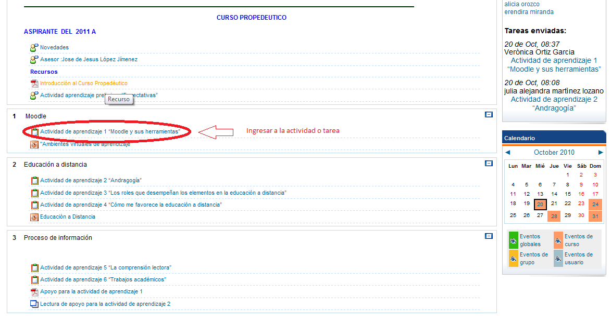
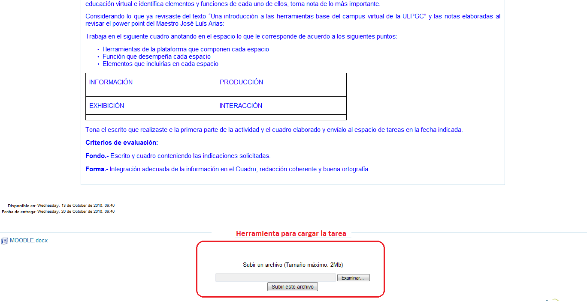
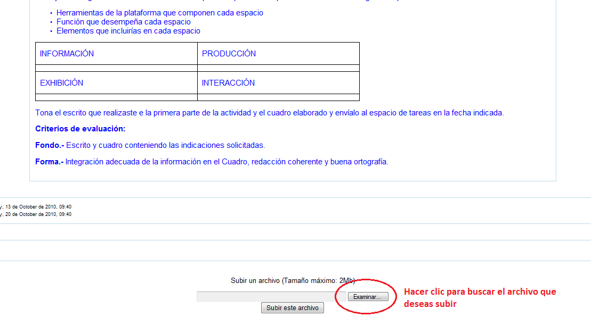
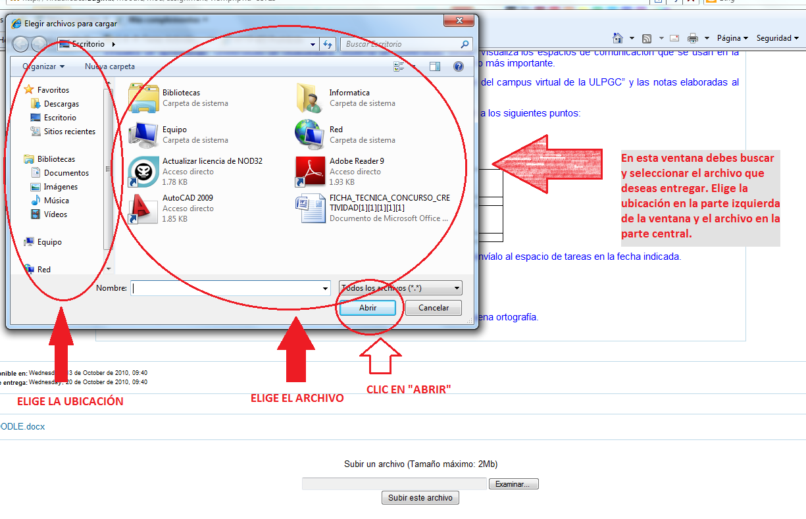
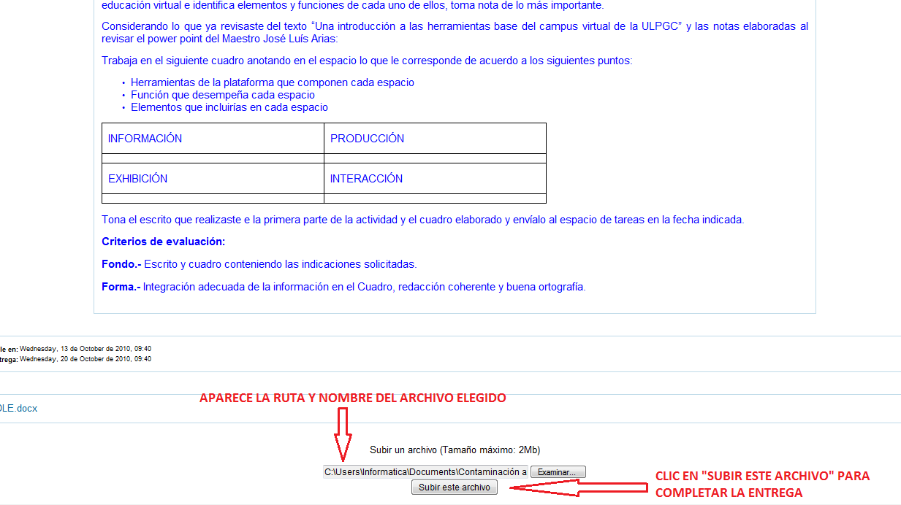

Guía rápida para subir tareas y actividades
Paso 1:
Ingresa a la tarea o actividad que deseas entregar.

Paso 2:
Ubica la herramienta para cargar tareas, la cual se localiza en la parte inferior de la actividad.

Paso 3:
Haz clic en el botón "Examinar" para poder abrir una ventana que te permitirá elegir el archivo que deseas subir. NOTA IMPORTANTE: El archivo debe estar guardado primero en alguna carpeta de tu PC como "Mis Documentos" o "Descargas".

Paso 4:
Una vez que aparezca la ventana para buscar el archivo, elige la ubicación en la que se encuentra, es decir, la unidad o carpeta de tu PC en la que está guardada la tarea que vas a entregar. Ya que eliges la ubicación, localiza el archivo que deseas entregar y haz un clic sobre él. Finalmente, haz clic en el botón "Abrir".

Paso 5:
Cuando ya elegiste el archivo, aparecerá su nombre y ruta en en espacio dedicado a ello. Sólo debes hacer clic en el botón "Subir este archivo" para completar la entrega. Si todo sale bien, verás el mensaje "Archivo subido con éxito" en la pantalla, lo cual completa el proceso de entrega de la tarea o actividad.
